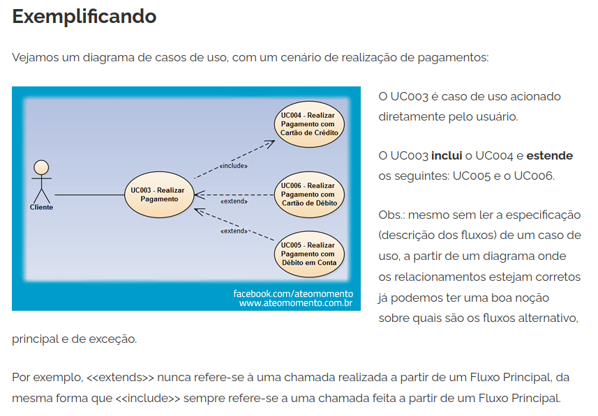
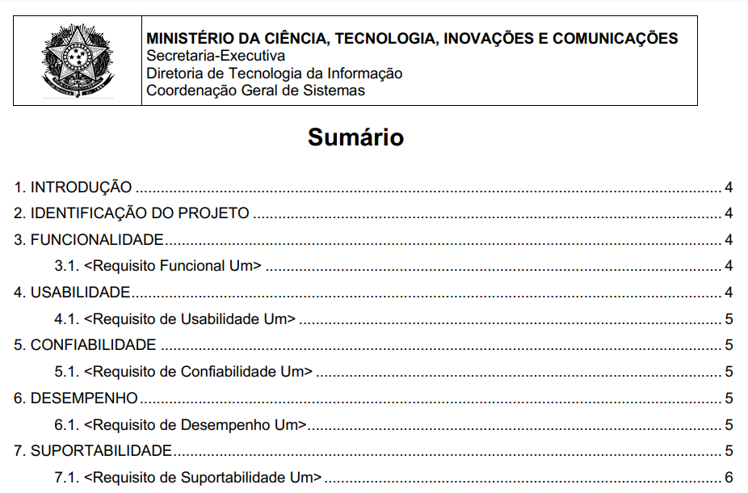
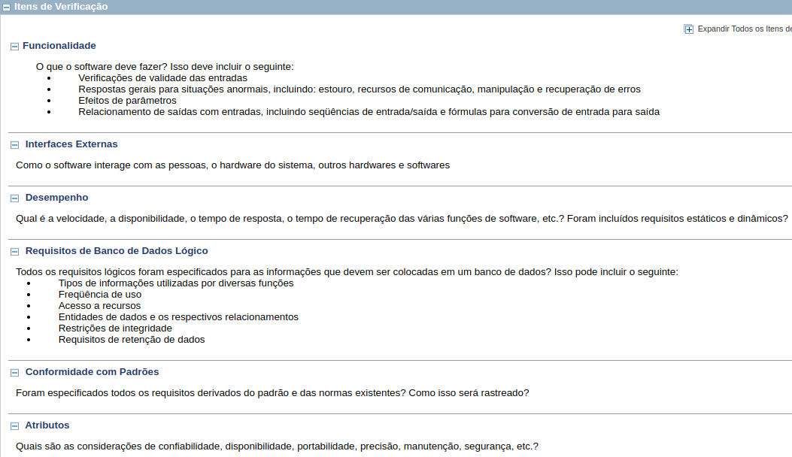
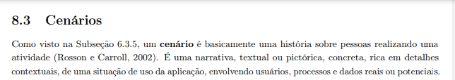
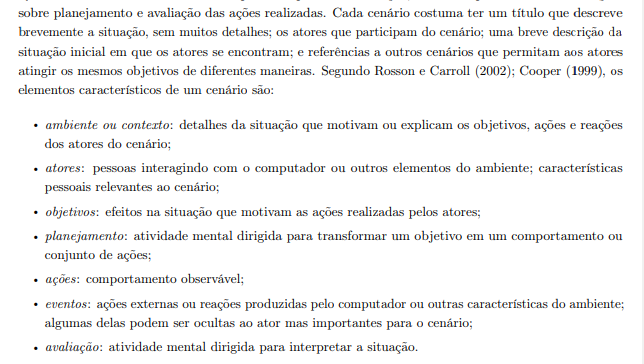
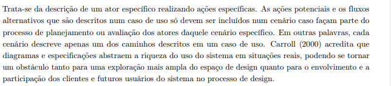

Lista de Verificação - Entrega 3
Introdução
O artefato apresenta o planejamento da verificação dos artefatos desenvolvidos pelo grupo 4 e grupo 5 durante a Etapa 3 (Modelagem de Requisitos).
Objetivos
O objetivo deste documento é registrar a lista de verificação da 3ª etapa do Grupo 4, que será utilizada para verificar artefatos do próprio grupo e do Grupo 5.
Metodologia
Através de reuniões, o grupo decidiu adotar a metodologia de verificação por inspeção desenvolvida por Fagan (Michael E. Fegan) em 1976. Dessa maneira, cada integrante participa na entrega do projeto nos prazos planejados. Cada artefato varificado gera um relatório anexado junto aos demais artefatos daquela entrega. Para responder às perguntas apresentadas nas listas de verificação o avaliador usará as opções Sim, Não, Incompleto ou Não se aplica. O avaliador tambem poderá escrever observações para cada item, se achar necessário.
Lista de Verificação
Tabela 1 - Lista de Verificação.
| ID | Descrição | Avaliação | Autor | Data e Hora |
|---|---|---|---|---|
| Itens do desenvolvimentos do projeto | ||||
| 1 | Todos os 9 itens | - | André Barros | - |
| Itens do conteúdo da disciplina | ||||
| 1 | As especificações dos cenários para o projeto. Exemplo de especificação dos cenários? 2 |
- | André Barros | - |
| 2 | Os cenários possuem os elementos básicos de um cenário (Título, Metas/Objetivo, Contexto, Atores, Recursos, Exceção e Episódios). Quais elementos dos cenários? 2 |
- | André Barros | - |
| 3 | As especificações dos léxicos. O que são léxicos? 1 |
- | André Barros | - |
| 4 | A definição do usuário nos léxicos. | - | André Barros | - |
| 5 | Os léxicos possuem ligações entre si (hiperlinks). | - | André Barros | - |
| 6 | Os léxicos utilizam a estrutura de dicionário (verbo, objeto, estado). O que é o dicionário dos léxicos?1 |
- | André Barros | - |
| 7 | A especificação do caso de uso. | - | André Barros | - |
| 8 | Os atores principais e secundários no diagrama de caso de uso. 1 [min. 3:27]. |
- | André Barros | - |
| 9 | O ator principal está do lado esquerdo do sistema no diagrama de caso de uso. 1 [min. 3:57] |
- | André Barros | - |
| 10 | Os atores estão fora da caixa de limite do sistema no diagrama de caso de uso. 1 [min. 2:55] |
- | André Barros | - |
| 11 | A especificação do diagrama de caso de uso (com Nome, Descrição, Atores, Pré-Condição, Pós-Condição, Fluxo Principal, Fluxo Alternativo e Fluxo de Exceção etc.). | - | André Barros | - |
| 12 | No diagrama de caso de uso há ao menos um caso de uso com pontos de extensão? 1 [min. 8:35] |
- | André Barros | - |
| 13 | A participação do cliente e/ou persona na validação do diagrama de caso de uso. | - | André Barros | - |
| 14 | A especificação suplementar. O que é especificação suplementar? 2 |
- | André Barros | - |
| 15 | O artefato segue o modelo FURPS+. | - | André Barros | - |
| 16 | O documento especifica o tempo de resposta, no desempenho? | - | André Barros | - |
| 17 | O documento especifica qual plataforma o aplicativo pode ser executado? | - | André Barros | - |
| 18 | Todos os requisitos podem ser testados (RF e RNF)? Identificar quais requisitos não são testáveis/verificáveis. |
- | André Barros | - |
| Itens desenvolvidos pelo grupo | ||||
| P1 | O diagrama representa o sistema, que é o software modelado, como um retângulo intitulado pelo nome do sistema? | - | Pedro Lopes | - |
| P2 | São especificadas respostas para situações anormais, como recuperação de erros? | - | João Pedro | - |
| P3 | Estão anotadas, junto às extensões, as observações que descrevem as condições para que elas ocorram? | - | Emivalto Junior | - |
| P4 | O cenário descreve uma situação concreta de uso do sistema? | - | Artur Ricardo | - |
| P5 | Cada símbolo é caracterizado por um, e apenas um, dos seguintes tipos: sujeito, verbo, objeto ou estado? | - | Matheus Henrick | - |
Autores: Pedro Lopes, Emivalto Júnior, João Pedro, Artur Ricardo, Matheus Henrick e André Barros
Evidências
Vídeo 1 ─ Diagrama de Caso de Uso
Fonte: Lucid Software Português
Imagem 2 ─ Fluxo Alternativo de Caso de Uso

Fonte: Até o Momento
Imagem 3 ─ Modelo FURPS na Especificação Suplementar

Fonte: MCTIC
Imagem 4 ─ Lista de Verificação de Especificação Suplementar

Fonte: Centro de Informática UFPE

Fonte: Interação Humano-Computador e Experiência de Usuário, p. 172
Imagem 6 ─ Elementos de um Cenário

Fonte: Interação Humano-Computador e Experiência de Usuário, p. 172
Imagem 7 ─ Cenário versus Caso de Uso

Fonte: Interação Humano-Computador e Experiência de Usuário, p. 173
📚 Referências Bibliográficas
1. Barbosa, S. D. J.; Silva, B. S. da; Silveira, M. S.; Gasparini, I.; Darin, T.; Barbosa, G. D. J. Interação Humano-Computador e Experiência do usuário. Autopublicação. 2021. 172-173. ISBN: 978-65-00-19677-1.
2. Leite, Julio C. S. P. Léxico Ampliado da Linguagem: Resumo. Disponível em: https://www-di.inf.puc-rio.br/~julio/lal.pdf. Acessado em: 08/12/2024.
📑 Histórico de versão
| Versão | Descrição | Autor(es) | Data de Produção | Revisor(es) | Data de Revisão |
|---|---|---|---|---|---|
1.0 |
Criação do documento | João Pedro | 06/12/2024 | Pedro Lopes | 08/12/2024 |
1.1 |
Correções e adição de hyperlinks | João Pedro | 08/12/2024 | Pedro Lopes | 08/12/2024 |
1.2 |
Correções | Pedro Lopes | 08/12/2024 | João Pedro | 08/12/2024 |